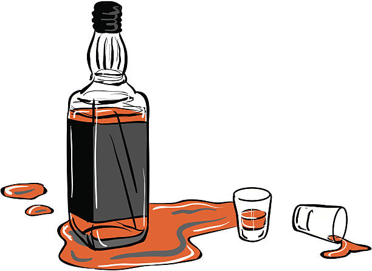

Nature of Alcoholism
Many will blame the alcoholic for their addiction as if they are the sole agents in their actions, which is not true. Genetics plays a pivotal role in the likelihood of developing an addiction, especially among men1. According to the NIAAA, the risk of developing alcoholism seems to run in families2.
Genetics
plays a pivotal role in the likelihood of developing an addiction, especially among
men.
The effects of alcoholism are devastating.
Alcohol is recognized to be toxic to the body so regular consumption can cause
irreversible damage to the cardiovascular system, digestive tract, and nervous
system, along with a myriad of adverse health effects3. Alcohol misuse is also
the single most important predictor of violence between domestic partners as
well as violence within families4. This creates a generational cycle of drinkers
that is nearly impossible to escape from.
1. McGue, Matt. “The Behavioral Genetics of Alcoholism.” Current Directions in Psychological Science 8, no. 4 (1999): 109–15. http://www.jstor.org/stable/20182577, 109.
2. Frey, Rebecca, and Joan Schonbeck. 2020. “Alcoholism.” Gale Encyclopedia of Medicine.
3. Frey, Gale Encyclopedia of Medicine.

4. McGue, Genetics of Alcoholism,
110.